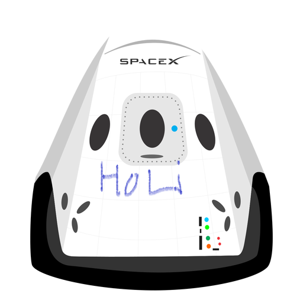

Hyperblog
Tu blog de confianza
Este es el titulo atractivo e interesante del post
Y este es el párrafo de inicio donde vamos a explicar las cosas increíbles que se pueden hacer con ramas aaaaaaaaaaaaaaaaaaa aaaaaaaaaaaaaaaaaaa

Los blogs son la mejor forma de compartir informacion y tu ideas. Mucho mas que ir a conferencia o salir en Youtube. Exepto si eres un rockstar. Pero estadisicamente no lo eres . . . . Por ahora
Suscribete y dale like